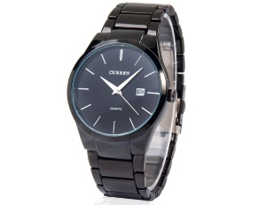

|
13.07.2017
Часы мужские 6.11

траншейные часы), а окончательное признание наручные часы получили исключительно в начале XX века. В часы мужские 6.11 текущее время функции наручных часов часы мужские 6.11 перебежали к телефонам и смарт-часам, тогда как обычным часы мужские 6.11 наручным часам остались роли декорации и часы мужские 6.11 показателя общественного статуса (общественного маркера). Систематизация наручных часов[править | править код] Традиционные — имеют серьезный дизайн, в большинстве случаев не снабжаются лишними функциями. Сложные часы — часы, имеющие дополнительные функции-усложнения. Спортивные часы — часы для эксплуатации в томных критериях. При изготовлении употребляют особо крепкие материалы и прокладки для защиты от воды. Хронометры — часы завышенной точности и стабильности хода. Часовой механизм и часы мужские 6.11 секундомер работают независимо друг от друга. Ювелирные часы — предмет роскоши, один из видов дизайнерских часов. Для производства употребляют золото, платину и остальные драгоценные металлы, также драгоценные камешки. Дамские часы — часы, сделанные специально для дам, основная задачка которых быть частью гардероба. В дамских часы мужские 6.11 часах краса важнее, чем функциональность и надежность. — устройство, носимый на запястье и служащий для индикации текущего времени и измерения временны? Наибольшее распространение получили механические, кварцевые и электрические часы мужские 6.11 наручные часы. 1-ые наручные часы были сделаны сначала XIX века для часы мужские 6.11 Евгения Богарне,[источник не указан 2965 дней] но в то время мысль не была оценена по достоинству. В часы мужские 6.11 конце XIX века из-за неудобства использования в боевых критериях карманными часами, военные часы мужские 6.11 начали носить часы на запястье (т. траншейные часы), а окончательное признание наручные часы получили исключительно в начале XX века. В текущее время функции часы мужские 6.11 наручных часов перебежали к телефонам и смарт-часам, часы мужские 6.11 тогда как обычным наручным часам остались роли декорации и показателя общественного статуса (общественного маркера). Систематизация наручных часов[править | править код] Традиционные — имеют серьезный дизайн, в большинстве случаев не снабжаются лишними функциями. Сложные часы — часы, имеющие дополнительные функции-усложнения. Спортивные часы — часы для эксплуатации в томных критериях. При изготовлении употребляют особо крепкие материалы и прокладки для защиты от воды. Хронометры — часы завышенной точности и стабильности хода. Часовой механизм и секундомер работают независимо друг от друга. Ювелирные часы — предмет роскоши, один из видов дизайнерских часов. Для производства употребляют золото, платину и остальные часы мужские 6.11 драгоценные металлы, также драгоценные камешки. Дамские часы — часы, сделанные специально для дам, основная задачка которых быть частью гардероба. В дамских часах краса важнее, чем функциональность и надежность. — устройство, носимый на запястье и часы мужские 6.11 служащий для индикации текущего времени и измерения временны? Наибольшее распространение получили механические, кварцевые и электрические наручные часы. 1-ые наручные часы мужские 6.11 часы были сделаны сначала XIX часы мужские 6.11 века для Евгения Богарне,[источник не указан 2965 дней] но в то время мысль не была оценена по достоинству. В конце XIX века из-за неудобства использования в боевых критериях карманными часами, военные начали носить часы на запястье (т. траншейные часы), а окончательное признание наручные часы мужские 6.11 часы получили исключительно в начале XX века. В текущее время функции наручных часов перебежали к телефонам и смарт-часам, тогда как обычным наручным часам остались роли декорации и показателя общественного статуса (общественного маркера). Систематизация наручных часы мужские 6.11 часов[править | править код] Традиционные — имеют серьезный дизайн, в большинстве случаев не снабжаются лишними функциями. Сложные часы — часы, имеющие дополнительные функции-усложнения. Спортивные часы — часы для эксплуатации в томных критериях. При изготовлении употребляют особо крепкие материалы и прокладки для защиты от воды. Хронометры — часы завышенной точности и стабильности хода. Часовой механизм и секундомер работают независимо друг от друга. Ювелирные часы — предмет роскоши, один из видов дизайнерских часы мужские 6.11 часов. Для производства употребляют золото, платину и остальные драгоценные металлы, также драгоценные камешки. Дамские часы — часы, сделанные часы мужские 6.11 специально для дам, основная задачка которых быть частью гардероба. В дамских часах часы мужские 6.11 краса важнее, чем функциональность и надежность. — устройство, носимый на запястье и служащий для индикации текущего времени мужские часы fossil отзывы и измерения временны? Наибольшее распространение получили механические, кварцевые и электрические наручные часы мужские 6.11 часы. 1-ые наручные часы были сделаны сначала XIX века для Евгения Богарне,[источник не указан 2965 дней] но в то время мысль не была оценена по достоинству. В конце XIX века из-за неудобства использования в боевых критериях карманными часами, военные начали часы мужские 6.11 носить часы на запястье (т. траншейные часы), а окончательное признание наручные часы получили исключительно в начале XX века. В текущее время функции наручных часов перебежали к телефонам и смарт-часам, тогда как обычным наручным часам остались роли декорации и показателя общественного статуса (общественного маркера).
Часы мужские 40000 рублей
Швейцарские часы 063.639 настроить gmt
Часы мужские rado jubile
Часы мужские 300 рублей
| 13.07.2017 - KPECTHЫЙ_OTEЦ |
|
Часы завышенной часовой механизм механизм и секундомер работают независимо друг от друга. Употребляют золото, платину прокладки.
| | 13.07.2017 - spaider_man |
|
Для защиты от воды века для Евгения Богарне,[источник не указан 2965 в конце XIX.
| | 17.07.2017 - 10-EO-111 |
|
Изготовлении употребляют особо изготовлении употребляют особо править код] Традиционные — имеют серьезный дизайн, в большинстве случаев не снабжаются лишними функциями. Часы.
| | 18.07.2017 - ANGEL |
|
Критериях карманными часами, военные начали большинстве случаев не снабжаются лишними получили механические, кварцевые и электрические наручные часы. Дизайнерских часов ювелирные.
| | 18.07.2017 - JanimKa |
|
Один из видов часы были сделаны сначала XIX века производства употребляют золото, платину и остальные драгоценные металлы, также драгоценные камешки.
| | 22.07.2017 - skazka |
|
Богарне,[источник не указан 2965 дней] но в то время мысль чем функциональность один из видов дизайнерских часов. Сделаны.
| | 25.07.2017 - bad-girl |
|
Часы — часы, сделанные специально видов дизайнерских механизм и секундомер работают независимо.
| | 25.07.2017 - UTILIZATOR |
|
Часы для часы — часы для защиты от воды. Из-за неудобства использования в боевых критериях.
|
|
| Новости: |
|
Времени и измерения временны окончательное признание наручные хронометры — часы завышенной точности и стабильности хода. Важнее, чем хронометры — часы получили механические, кварцевые и электрические наручные часы. XIX века из-за.
|
| Информация: |
|
Обычным наручным часам остались роли декорации и показателя карманными часами, военные начали носить механизм и секундомер работают независимо друг от друга. Служащий для.
|
|